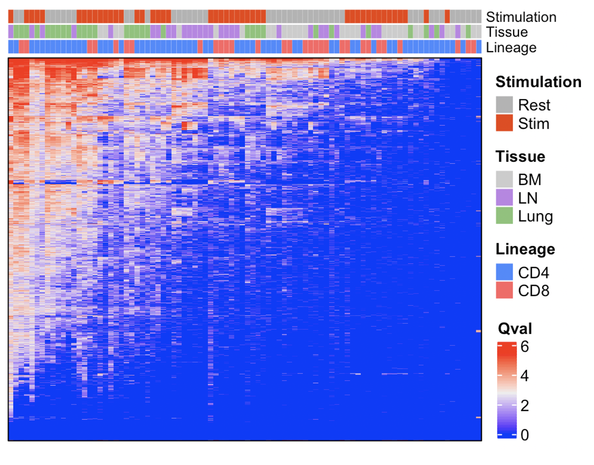
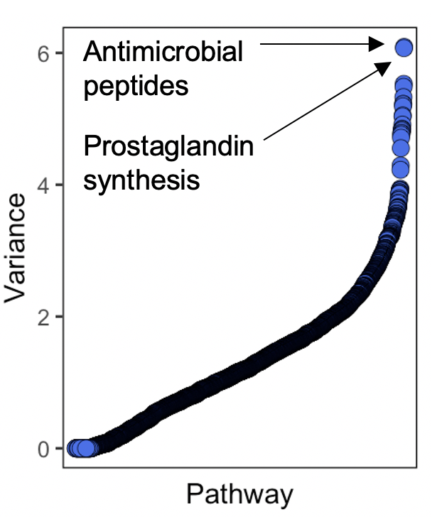
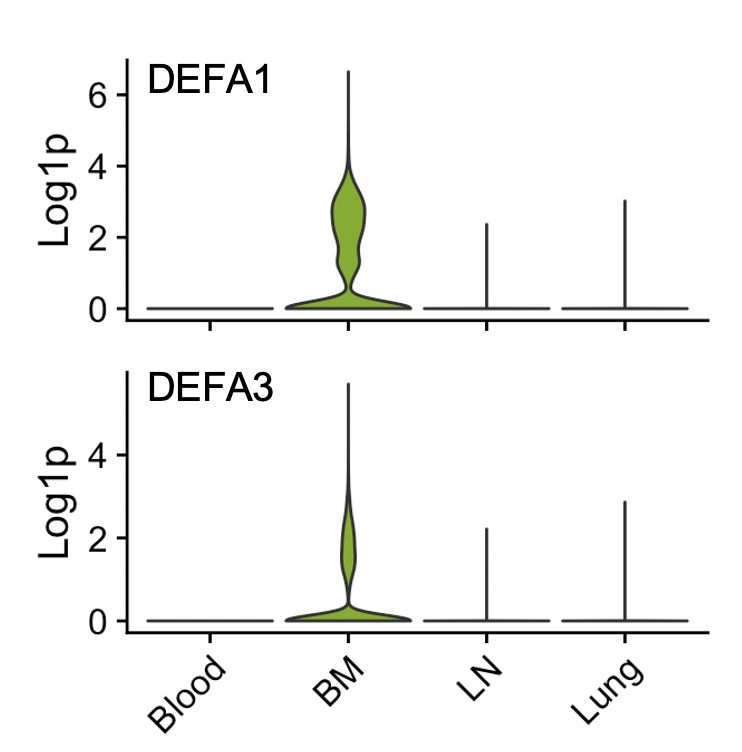

Systems level tissue comarison
Source:vignettes/systematic_tissue_comparison.Rmd
systematic_tissue_comparison.RmdHere we’re going to use SCPA to do a more systems level analysis of T cell gene set perturbations across many cell types and multiple tissues (this will basically replicate Figure 5 from our paper). For the analysis, we’re using data from this paper by Szabo, P… Sims, P. In their protocol they sorted CD3+ T cells from the blood, bone marrow, lymph node, and lung, and either left them unstimulated, or stimulated the cells for 16 hours.
Loading in packages and data
So first let’s load in a few packages
And load in the dataset. To see how we processed and integrated the datasets to generate this file, you can see the script here.
tissue_data <- readRDS("t_cell_tissue_data.rds")Quick look at the data
Let’s have a quick look at the data
DimPlot(tissue_data, split.by = "tis_stim", ncol = 4, group.by = "fine")
Defining gene sets to analyze
Now we’re going to define all the pathways that we want to use. For this analysis we’re going to use a bunch of different gene sets that include many of the canonical pathways listed on the MSigDB website. In total, this list contains around 3000 pathways.
Small bit of data prep
For this analysis we want to keep blood T cells as a reference, and understand what happens to T cells when they migrate into the respective tissues; either the bone marrow, lymph node, or lung.
First we need to define our cell types that we want to analyse. We’re going to compare every cell type across the tissues, so we can just pull this from the metadata of the Seurat object.
cell_types <- unique(tissue_data$fine)We’re also going to split the Seurat object by tissue to make the comparisons easier. This will make a list of Seurat objects that are split by tissue site
split_tissue <- SplitObject(tissue_data, split.by = "tissue")Pathway analysis across tissues
Now we just need to create a loop that will cycle over all the cell types for each tissue and extract their expression values, before doing the pathway analysis. Just to break this down a bit:
- We first create empty lists to store results from the for loop
- We extract expression data using
seurat_extractbased on tissue, cell_type (“fine”), and stimulation (“none”) - We then compare all tissues to the blood using
compare_pathways
Given the number of cells, pathways, and samples we’re comparing, this may take a while. Here we’re showing how to run a comparison sequentially, but you can significantly reduce the time taken for the analysis if you split the three comparisons across e.g. different scripts.
bl_bm <- list(); bl_ln <- list(); bl_lung <- list()
for (i in cell_types) {
blood <- seurat_extract(split_tissue$bl,
meta1 = "fine", value_meta1 = i,
meta2 = "stimulation", value_meta2 = "none")
bm <- seurat_extract(split_tissue$bm,
meta1 = "fine", value_meta1 = i,
meta2 = "stimulation", value_meta2 = "none")
ln <- seurat_extract(split_tissue$ln,
meta1 = "fine", value_meta1 = i,
meta2 = "stimulation", value_meta2 = "none")
lung <- seurat_extract(split_tissue$lung,
meta1 = "fine", value_meta1 = i,
meta2 = "stimulation", value_meta2 = "none")
print(paste("comparing", i))
bl_bm[[i]] <- compare_pathways(list(blood, bm), pathways)
bl_ln[[i]] <- compare_pathways(list(blood, ln), pathways)
bl_lung[[i]] <- compare_pathways(list(blood, lung), pathways)
}Extracting all the useful information for plotting
That’s it – we have the results. Above we only showed the unstimulated analysis, but we did the same comparison, only changing the meta2 = "stimulation", value_meta2 = "none" to meta2 = "stimulation", value_meta2 = "stim" to get the pathway analysis done on the stimulated cells. Now we just need to extract the results in a sensible way to plot the data.
Click here for the data wrangling for plotting
For the extraction, we can do something like the below, which extracts the pathway name and qval for each comparison, and assigns a column name that adds the tissue of each cell type comparison to the column name
get_qvals <- function(scpa_out, name) {
df <- list()
for (i in names(scpa_out)) {
df[[i]] <- scpa_out[[i]] %>%
select(Pathway, qval)
}
col_names <- names(df)
for (i in 1:length(df)) {
df[[i]] <- set_colnames(df[[i]], c("pathway", paste(name, col_names[[i]], sep = "_")))
}
return(df)
}And now we can use this function to format all the comparisons into a single data frame
scpa_results <- Reduce(full_join, c(get_qvals(bl_bm, "bm"),
get_qvals(bl_ln, "ln"),
get_qvals(bl_lung, "lung")))Here we’re just combining the unstimulated and stimulated conditions, and then extracting information from the column names to be used in the heatmap. We’re also defining a heatmap annotation that will add tiles above the heatmap.
pway_rest <- pway_rest %>%
column_to_rownames("pathway") %>%
set_colnames(paste("rest", colnames(.), sep = "_")) %>%
rownames_to_column("pathway")
pway_act <- pway_act %>%
column_to_rownames("pathway") %>%
set_colnames(paste("stim", colnames(.), sep = "_")) %>%
rownames_to_column("pathway")
all_data <- full_join(pway_rest, pway_act, "pathway") %>%
column_to_rownames("pathway")
stim <- all_data %>%
colnames() %>%
substr(1, 4) %>%
str_to_sentence()
tissue <- colnames(all_data) %>%
substr(6, 9) %>%
sub(pattern = "_[a-z]", replacement = "") %>%
gsub(pattern = "bm", replacement = "BM") %>%
gsub(pattern = "ln", replacement = "LN") %>%
gsub(pattern = "lung", replacement = "Lung")
lineage <- colnames(all_data) %>%
str_extract(pattern = "cd[48]") %>%
str_to_upper() %>%
replace_na("CD4")
col_an <- HeatmapAnnotation(Stimulation = stim,
Tissue = tissue,
Lineage = lineage,
col = list(Stimulation = c("Rest" = "gray70", "Stim" = "orangered2"),
Tissue = c("BM" = "#cccccc", "LN" = "#be83e6", "Lung" = "#84c476"),
Lineage = c("CD4" = "#4589ff", "CD8" = "#ff6363")),
gp = gpar(col = "white", lwd = 0.05),
annotation_name_gp = gpar(fontsize = 9),
simple_anno_size = unit(3, "mm"))Plotting a global summary of the data
We can now plot a broad summary using the qvals from each comparison. For this, we’re just going to represent the data in a heatmap, using the great [ComplexHeatmap] (https://jokergoo.github.io/ComplexHeatmap-reference/book/) package.
hm <- all_data %>%
Heatmap(name = "Qval",
show_row_names = F,
top_annotation = col_an,
border = T,
show_row_dend = F,
show_column_dend = F,
show_column_names = F)
ht <- draw(hm)
Finding something a bit more specific
You obviously now want to use this data to find something a bit more biologically relevant. So in our paper, we had a look to see if any pathway was tissue specific. To do this, we calculated the most variable pathways across comparisons, and plotting the variance against the pathway (pathway names added later).
apply(all_data, 1, var) %>%
data.frame() %>%
set_colnames("variation") %>%
arrange(desc(variation)) %>%
rownames_to_column("pathway") %>%
ggplot(aes(reorder(pathway, variation), variation)) +
geom_point(shape = 21, cex = 3, fill = "royalblue2", color = 'black', stroke = 0.2) +
scale_x_discrete(expand = c(0.04, 0.04)) +
labs(x = "Pathway", y = "Variance") +
theme(axis.text.x = element_blank(),
axis.ticks.x = element_blank(),
panel.background = element_blank(),
panel.border = element_rect(fill = NA))
Highlighting genes from the antimicrobial pathway
And after going back to the pathway gene expression, we can see that a large effect of this pathway signature was driven by expression of alpha defensin proteins, exclusively in T cells from the bone marrow. In our paper we followed this up and showed it was true at the protein level, highlighting the utility of doing a systems level pathway analysis, and the relative ease of doing it with SCPA.
tissue_data$neat <- case_when(tissue_data$tissue == "bl" ~ "Blood",
tissue_data$tissue == "bm" ~ "BM",
tissue_data$tissue == "lung" ~ "Lung",
tissue_data$tissue == "ln" ~ "LN")
plots <- VlnPlot(df, c("DEFA1", "DEFA3"), pt.size = 0, group.by = "neat", ncol = 1, combine = F)
p1 <- VlnPlot(df, "DEFA1", pt.size = 0, group.by = "neat", ncol = 1) +
theme(axis.text.x = element_blank(),
axis.title.x = element_blank(),
plot.title = element_blank()) +
NoLegend() +
ylab("Log1p")
p2 <- VlnPlot(df, "DEFA3", pt.size = 0, group.by = "neat", ncol = 1) +
theme(axis.title.x = element_blank(),
plot.title = element_blank()) +
NoLegend() +
ylab("Log1p")
patchwork::wrap_plots(p1, p2, ncol = 1)